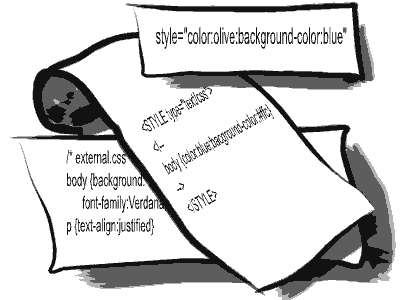

Required: CSS islands
Hey CSS guys, how about a CSS island tag?!
This is what I’m talking about:
<html>
<style>
h1 {
font-size: bigger;
}
</style>
<body>
lots of html code....
<cssisland resets="h1;h2;div.img;#id">
<style>
h1 {
font-size: smaller;
}
</style>
here all page css code is preserved except for h1, h2, div.img and #id
h1 has a smaller font-size only within the scope of this block.
</cssisland>
more html code... Here h1 has font-size bigger again.
</body>
</html>
Here’s the problem: It’s very common that web pages are constructed by many sources. For example in my about page I have a stack overflow badge. Most of the content of this page was constructed by me, but this badge is from stackoverflow.com. The badge widget uses some CSS styles that might conflict with my page styles. For example it may use h1 or default fonts etc. The widget author can’t possibly know who’s going to use her widget, in what pages or how those pages are constructed and so it’s very likely that there will be a CSS conflict. The browser will know what to do with the CSS conflict, after all that’s how CSS is designed, it’ll find what needs to cascade what, but the problem is that either the widget is going to look awful b/c it’s author didn’t think of setting some CSS properties that have odd values on my page or that the page suffers b/c the widget has changes some CSS attribute that messes up the page.
One possible solution to this problem of CSS conflict may be using an iFrame, but this is also a very limited solution b/c sometimes you don’t want to use an iframe and you do want to preserve most of the page styles. See my previous post on the subject.
The common practice today, which pretty much sucks (IMO…), is to set all style attributes inline, for example:
<html>
<style>
h1 {
font-size: bigger;
}
</style>
<body>
lots of html code....
<h1 style="font-size: smaller">My great widget</h1>
more html code... Here h1 has font-size bigger again.
</body>
</html>
Here we set the h1 font-size as an inline style attribute but this sucks b/c the code is ugly and not very robust.
To do it nicely you’d want to add a <style> block but you can’t. If you do:
<html>
<style>
h1 {
font-size: bigger;
}
</style>
<body>
lots of html code....
<style>
h1 {
font-size: smaller;
}
</style>
<h1>My great widget</h1>
more html code... Here h1 has font-size bigger again.
</body>
</html>
… then you’re going to mess up the page display by changing all h1 on it.
So what I’m suggesting is a css-island block which isolates all CSS definitions declared inside it and as a convenience may also reset other CSS selectors defined on the page. This is a “scratch” idea, so optimizations are in place but as a general thought, how does it sound?
Does that sound like a good idea?
mmm…
I think adding css islands will just make things over complicated.
If I will be designing a widget, I would be trying to stick to as less elements needed: div, span, img, a and some form elements can do most of the tricks. Leave h1,h2 and other stuff for the containing page – I am not sure markup semantics is so important in widgets in HTML pages of 2009.
Now just reset those elemnts:
.mywidget div, .mywidget span {
font-weight:normal;
}
and apply your style to your classes.
And you might need to add many !importants to stay on the safe side.
Udi
By Udi on Jun 3, 2009
A widget maker *should* have it’s CSS statements using a unique “name space”, so if a the widget main element is a div, it should have an id attribute (id=”my-widget”), and then ant css statement should begin with that id (e.g. #my-widget h1 {font-size: 16px}).
By uzi on Jun 3, 2009
Uzi and Udi (or should I call you U[zd]i ) what you’re describing is what I call the sad situation of today and I think it deserves improvements.
) what you’re describing is what I call the sad situation of today and I think it deserves improvements.
Uzi – so long as there is no solution to the problem I agree that a widget author should use unique namespace but this is a very error prone approach and makes an ugly code.
Udi – I used h1 as an example, but even if you choose not to use it you still have the same set of problems. Even if you use more specific css selectors such as .mywidget div you still can’t anticipate all other css attributes that the site owner has chosen to set so your widget may look unprofessional in some sites.
By rantav on Jun 3, 2009
A CSS island isn’t the way to go (IMO), because it contradicts the ideal of content, style, behavior suppuration (A very practical ideal).
Actually i agree with Uzi and don’t quite follow your reasoning. You don’t have to put your trust on the widget author, You can just place the widget inside a “namespaced” div. Is this more ugly then CSS islands???
By Neil on Aug 16, 2009
Ran,
Have you seen http://code.google.com/p/cleanslatecss/ ?
Udi
By Udi on Nov 1, 2009